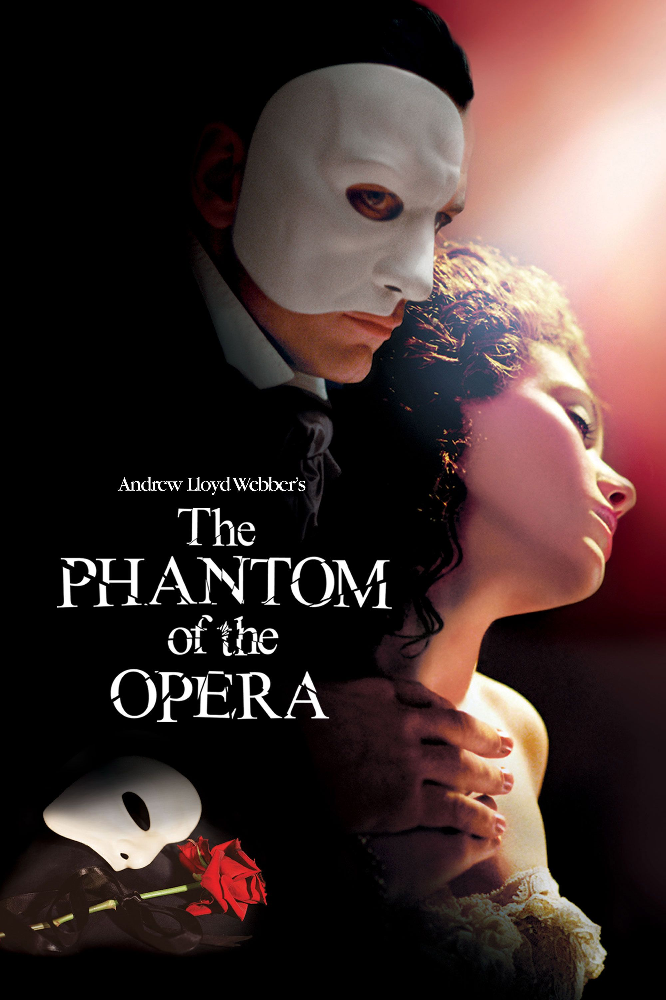

Final 2: The Phantom of the Opera (2004)
Introduction
For my final portfolio post, I chose to re-watch and review one of my favorite musical films: The Phantom of the Opera. In my opinion, not only has Andrew Lloyd Webber's vision been excellently adapted to the silver screen, but the music that was presented along with it was also absolutely beautiful. Overall, I was just as impressed watching it now as I was the first time many years ago, if not more so. Overall, I was very happy that I got to watch this again
Plot Synopsis (Spoilers Obviously)
Our story follows our protagonist Christine Daaé's (Emmy Rossum) experiences as an up-and-coming prima donna at her opera house after the previous one stormed off. The events that follow depict the development of a relationship between Christine and a suitor by the name of Raoul de Chagny (Patrick Wilson). This relationship, however, is complicated by the fact that the titular Phantom of the Opera (Gerard Butler), whom Christine owes her singing skills, is also romantically interested in her. Throughout the film, The Phantom wreaks havoc at the opera house in retribution to both the new theater owners for disobeying his wishes as well as Christine for failing to reciprocate his romantic interest. After attempting to make Christine love him, The Phantom is finally convinced by her at the film's climax to abandon his unrequited love and to leave her and Raoul in peace.
General Musical Review
Given that a majority of the dialogue in this production is delivered through song, it should be no surprise that music plays an extremely critical role in the content of this film. Many, if not most of the conversations between characters are actually duets, with the characters taking turns performing the solo sections in a drawn-out form of call and response. There are also monologues that are sung purely in a solo fashion by a single actor however. Additionally, several musical numbers feature and entire choral section. These particular numbers are usually accompanied by a heavily-choreographed mass spectacle. The video to the right displays one of such spectacles, performed to the song Masquerade.
It should also be obvious by now that with the significant importance of music to the production, the orchestra also plays an immensely critical role in the story. The most obvious role is the presentation of the various leitmotifs, the most prominent of which is the organ riff that accompanies The Phantom anytime his character appears. Other leitmotif reprises are also used to accent thematic elements of the story as well. The best example of this that I could think of is the downward leap featured most prominently in the first measure of All I Ask of You being reprised to represent a longing for love.
Scene Discussion
Without a doubt, let me say here and now that All I Ask of You is my absolute favorite song in the entire film. As such, the scene in which it is sung is the one that I chose to discuss. The context behind it is that The Phantom has just hung one of the stagehands during a performance. As a result of this, Christine and Raoul have escaped onto the roof of the opera house to find solace from danger. The song serves as an affirmation from Raoul that he will be Christine's pillar in her time of need as well as Christine's affirmation of her reciprocated affection for him. Meanwhile, The Phantom looks on in the shadows, simmering in jealousy.
It should be pretty obvious how important the music is in this scene considering that it is entirely delivered in the form of song. The leitmotif mentioned earlier is in full force as the two lovers are longing for a future together. At the beginning of the scene, the timid and subdued playing from the orchestra directly reflects the fact that both of the characters are still in a state of unease. Christine is still not entirely sure that Raoul will be able to offer her the freedom and protection that she desires, and Raoul is not sure whether his affection for Christine is requited. As the song progresses, the increasingly lush and full sound of the orchestra mirrors the growing confidence that the two have for each other as lovers. Finally, the massive swell towards the end conveys the burning passion that the two feel now that they have affirmed each other's desires as they embrace and kiss for the first time.
Final Remarks
I hope that it was noticable that I actually enjoyed doing a portfolio post for once from the extra level of detail in this post. Like I said in the beginning, The Phantom of the Opera has always been one of my favorite musicals of all time. I still get goosebumps listening to it sometimes. While the continuity of the story could use some work at some parts, the thematic elements are all there and make this production immensely satisfying to watch.